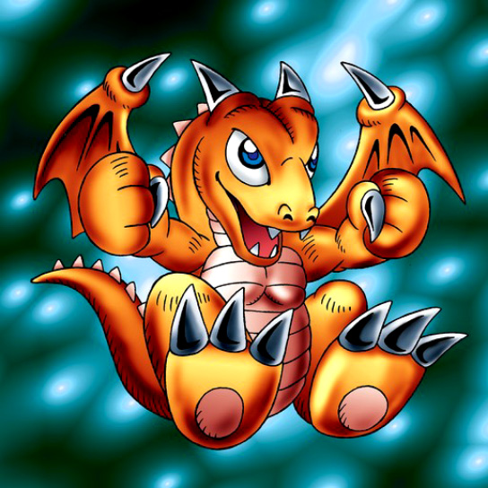

Baby Dragon

STATS
ATK: 1200
DEF: 700DECK COST
Deck Cost per Card: 19Fusion List (57 Possible Fusions)
- Baby Dragon + Ancient Brain = Blackland Fire Dragon
- Baby Dragon + Ancient Jar = Stone D.
- Baby Dragon + Arlownay = B. Dragon Jungle King
- Baby Dragon + Armaill = D. Human
- Baby Dragon + Armored Zombie = Dragon Zombie
- Baby Dragon + Axe Raider = Sword Arm of Dragon
- Baby Dragon + Bean Soldier = B. Dragon Jungle King
- Baby Dragon + Bolt Penguin = Thunder Dragon
- Baby Dragon + Brave Scizzar = Metal Dragon
- Baby Dragon + Cannon Soldier = Metal Dragon
- Baby Dragon + Clown Zombie = Dragon Zombie
- Baby Dragon + Cyber Saurus = Metal Dragon
- Baby Dragon + Dragon Statue = D. Human
- Baby Dragon + Dragon Zombie = Skelgon
- Baby Dragon + Dryad = Blackland Fire Dragon
- Baby Dragon + Eldeen = Blackland Fire Dragon
- Baby Dragon + Electric Snake = Thunder Dragon
- Baby Dragon + Fire Kraken = Sea King Dragon
- Baby Dragon + Firegrass = B. Dragon Jungle King
- Baby Dragon + Gate Deeg = Koumori Dragon
- Baby Dragon + Griggle = Blackland Fire Dragon
- Baby Dragon + Haniwa = Stone D.
- Baby Dragon + Harpie Lady = Harpie's Pet Dragon
- Baby Dragon + Jellyfish = Spike Seadra
- Baby Dragon + Kaminarikozou = Thunder Dragon
- Baby Dragon + Kuriboh = Koumori Dragon
- Baby Dragon + LaLa Li-oon = Thunder Dragon
- Baby Dragon + Living Vase = B. Dragon Jungle King
- Baby Dragon + Man-Eating Plant = B. Dragon Jungle King
- Baby Dragon + Masked Clown = D. Human
- Baby Dragon + Meda Bat = Koumori Dragon
- Baby Dragon + Mega Thunderball = Thunder Dragon
- Baby Dragon + Megasonic Eye = Metal Dragon
- Baby Dragon + Muka Muka = Stone D.
- Baby Dragon + Mystery Hand = Blackland Fire Dragon
- Baby Dragon + Mystic Lamp = Blackland Fire Dragon
- Baby Dragon + Oscillo Hero #2 = Thunder Dragon
- Baby Dragon + Oscillo Hero = D. Human
- Baby Dragon + Patrol Robo = Metal Dragon
- Baby Dragon + Pot the Trick = Stone D.
- Baby Dragon + Rainbow Flower = B. Dragon Jungle King
- Baby Dragon + Left Arm of the Forbidden One = Blackland Fire Dragon
- Baby Dragon + Left Leg of the Forbidden One = Blackland Fire Dragon
- Baby Dragon + Right Leg of the Forbidden One = Blackland Fire Dragon
- Baby Dragon + Right Arm of the Forbidden One = Blackland Fire Dragon
- Baby Dragon + Skelgon = Curse of Dragon
- Baby Dragon + Skull Servant = Dragon Zombie
- Baby Dragon + The Immortal of Thunder = Thunder Dragon
- Baby Dragon + The Little Swordsman of Aile = D. Human
- Baby Dragon + Thunder Dragon = Twin-Headed Thunder Dragon
- Baby Dragon + Time Wizard = Thousand Dragon
- Baby Dragon + Toad Master = Spike Seadra
- Baby Dragon + Wall of Illusion = Koumori Dragon
- Baby Dragon + Wood Remains = Dragon Zombie
- Baby Dragon + Wow Warrior = Kairyu-Shin
- Baby Dragon + Zone Eater = Spike Seadra
- Baby Dragon + Mystery Hand = Koumori Dragon